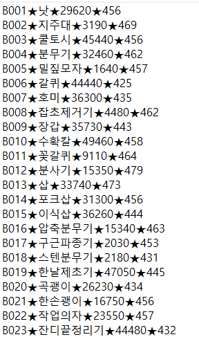
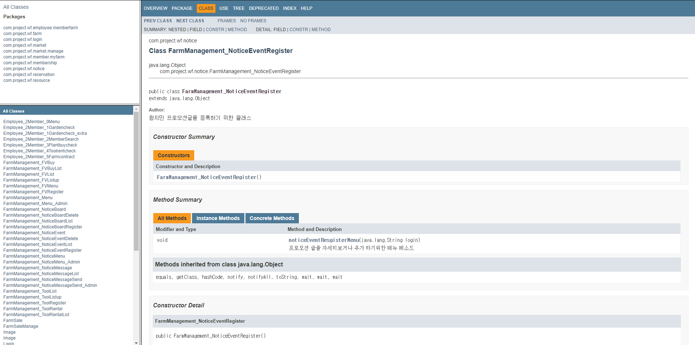
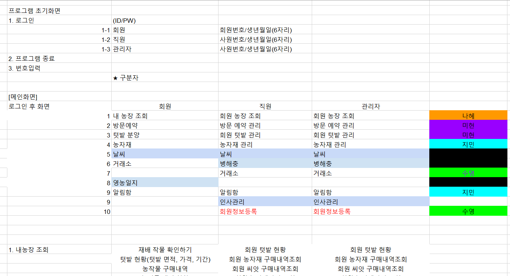
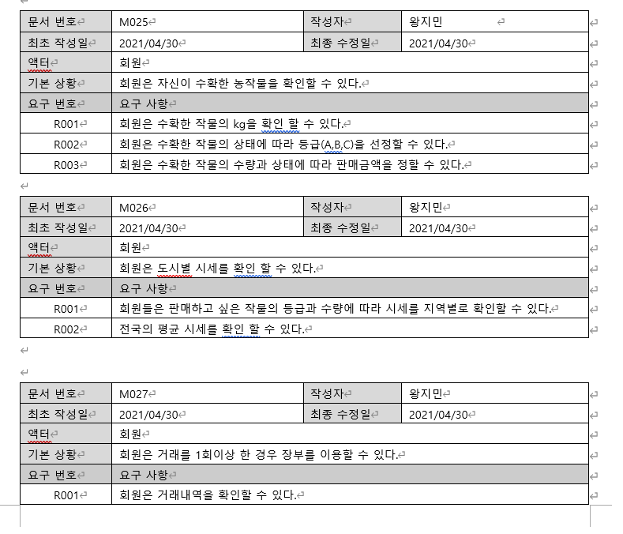

Experience
'주말 농장' 관리 프로그램 개발
-
프로젝트 개요 및 목적
- 주말 농장 서비스를 이용 할 수 있게 돕는 프로그램
- 농장 운영에 필요한 시스템 구축
- 회원들의 주말 농장 이용의 편의성 제공
-
프로젝트 설명
- 구성원 : 4명
- 개발 언어 : Java(JDK 1.8)
- 개발 툴 : Eclipse
-
개발 스킬
- 파일 입출력 : BufferedReader, Writer, new FileReader, Writer, Scanner
- 컬렉션 : ArrayList, HashMap
- Overloading, Overrade
- 기타 레퍼런스 타입 클래스 : Random, Math, Calendar
- Annotation을 통해 document파일 작성
-
담당 업무
-
문서 작성
프로그램 개발 기획안부터 시작하여 요구분석서, 기능명세서, 화면 설계등 프로그램 코드 작성 전에 필요한 문서들을 작성하고, 구조를 설계하여 개발에 필요한 준비를 진행하였습니다. -
더미데이터 작성
프로젝트 진행에 앞서 데이터를 확보할 수 있는 수단이 없기 때문에, ArrayList타입으로 Random클래스를 통하여 임의의 데이터를 다량 확보 하였습니다. 또한 다른 더미데이터와의 호환성을 위해 파일입출력(BufferedReader, Writer)을 사용하여 txt파일을 읽어 유효성 검사 후 작성하여 보다 정확도를 높였습니다.▲ 더미데이터 -
코드 작성
농자재 관리와 알림함, 2개의 메뉴를 담당하여 개발을 진행했습니다. 메뉴 모두 사용한 스킬과 기능 구현은 비슷하였습니다. 확보해 놓은 더미데이터를 기반으로 메소드와 클래스를 생성하여 getter, setter를 통해 초기값을 미리 설정하고, BuufferedReader를 사용하여 데이터를 읽어 가공하고, BufferedWriter을 사용하여 데이터를 등록, 삭제 등을 구현하여 txt파일에 저장하였습니다. 중복되는 부분이나 간결하게 표현할 수 있는 부분은 Overloading을 사용하여 코드를 효율적일 수 있도록 하였습니다. ▲ 농작물 등록페이지
▲ 농작물 등록페이지 ▲ 프로모션 등록페이지
▲ 프로모션 등록페이지 -
Document 작성
Annotation을 사용하여 작성한 메소드 및 클래스에 주석을 추가하여 document파일을 export하여 프로젝트를 좀 더 완성도를 높였습니다.▲ Index 문서 파일
▲ 업무분담 회의 자료▲ 요구분석서 ▲ Console 첫 페이지
▲ Console 첫 페이지 -
문서 작성
-
후기
-
퇴직 후, 교육을 이수하면서 처음 진행한 프로젝트인만큼 열정과 관심이 집중되었던 프로젝트였습니다.
객체 지향 언어는 학부때 이후로 처음 접해본 상태였고, 메소드 및 클래스를 구현하면서 보다 효율적이고, 기술적으로 작성해보려고 노력을 많이 했습니다.
조별 프로젝트를 진행하다보니, 나 혼자가 아닌 조원들 모두가 어우러지는 것에 대해 걱정이 많았는데, 다른 조원들 모두 적극적으로 참여하였고, 개발 경험이 없던 조원들에게 회사 근무 당시 개발했던 방식도 공유하면서 진취적으로 나갈 수 있도록 도움을 주었습니다. 자신의 업무외에도 서로 수정이 필요한 부분이나 의문점이 생기면 같이 고민하면서 보다 나은 결과물을 위해 열정적으로 프로젝트를 진행하였습니다.
한 가지 아쉬운 부분이 있다면, 다양한 기술을 활용 못했던 점에 대해 아쉬움을 느꼈습니다. 간단한 예를 들어 컬렉션을 주로 ArrayList를 사용했는데, 익숙한 것이 아닌 새로운 타입의 컬렉션을 사용하거나, 객체지향언어 장점인 상속, 추상클래스, 인터페이스 등을 적극적으로 활용했으면 코드가 좀 더 간결하고 보기좋은 코드를 작성할수 있었을 것 같은 아쉬움을 남긴채 프로젝트를 마무리하게 됐습니다.
2021.04.30 ~ 2021.05.11
(1일 8시간. 총 88시간)
(1일 8시간. 총 88시간)